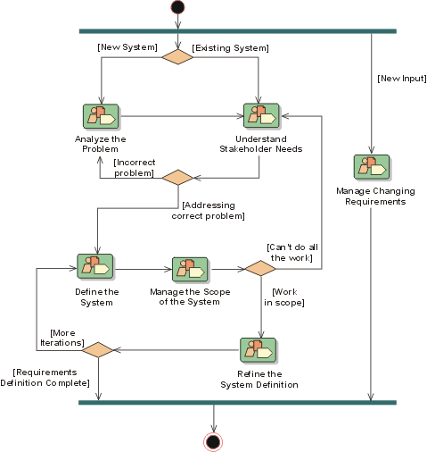

Development Case: Requirements
Discipline 
There are no formal changes to the Requirements discipline - it is used as is (see the RUP: Requirements Overview).

Artifacts
Notes on the Artifacts
None
Reports
| Reports | How to Use | Tools Used/ Templates/ Examples |
| Actor | Could | Template: Actor Report |
| Use-Case | Should - Use for review purposes as needed. | |
| Use-Case Model Survey | Must - Used as final documentation. | |
| Use-Case Storyboard | Could | Template: Use-Case Storyboard Report |
Notes on the Reports
The Use-Case Model Survey is base lined as part of the Requirements Baseline.
Additional Review Procedures
None
Other Issues
None.
Configuring The Discipline
For guidance on the purpose of, and how to complete, the sections and tables used on this page see RUP Overview: Discipline Configuration.
When configuring the Requirements Discipline help can be found in:
- RUP Discipline: Environment
- RUP Activity: Develop Development Case
- RUP Guidelines: Important Decisions in Requirements
You should also familiarize yourself with: